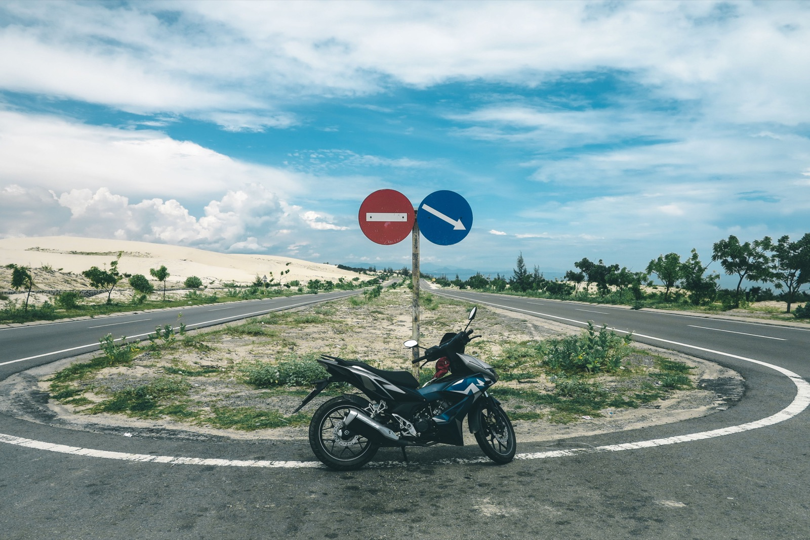
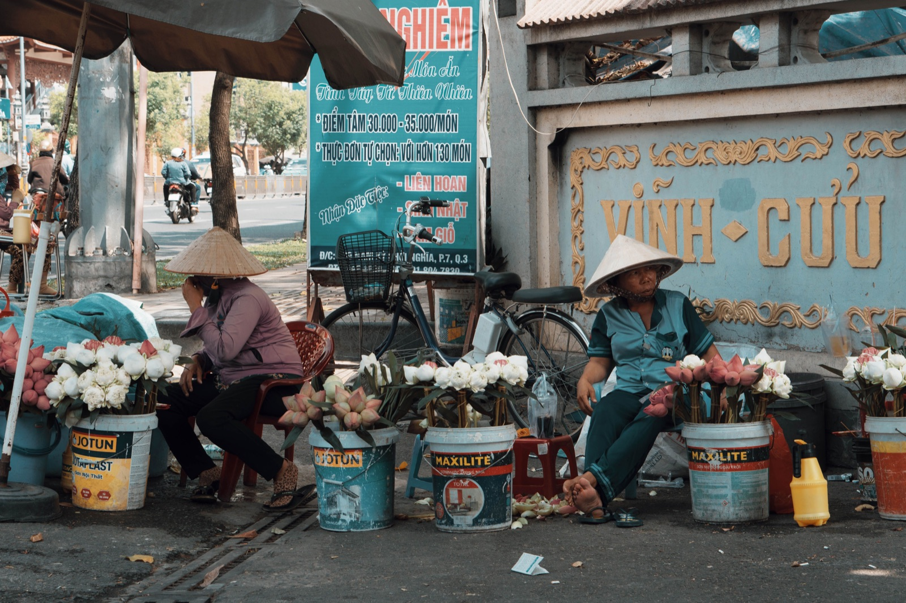

Как заправлять байк во Вьетнаме: бензин и фразы на АЗС

На большинстве АЗС всё делает сотрудник. Твоя задача — заглушить мотор, открыть бак, назвать сумму или попросить полный бак и проверить колонку перед оплатой.
Заправка по шагам
- Подъедь к свободной колонке и заглуши двигатель.
- Открой сиденье или крышку бака.
- Назови сумму — например 50 000 донгов — либо попроси полный бак.
- Проверь, что счётчик колонки сброшен.
- Оплати после заправки наличными или QR, если его принимают.

Полезные фразы
- Năm mươi nghìn — на 50 000 донгов;
- Đầy bình — полный бак;
- Xăng 95 — бензин RON 95.
Можно просто показать сумму на экране телефона. Цены меняются, поэтому смотри на табло конкретной АЗС.
Какой бензин заливать
Следуй руководству или наклейке конкретной модели. Если сомневаешься, уточни у продавца или механика именно по своему байку. Не используй топливо из безымянных бутылок, когда рядом есть нормальная стационарная АЗС.
Где находится бак
У скутера горловина часто под сиденьем, у Cub/Wave — под сиденьем или в центральной части. Попроси показать её при получении. Не переполняй бак и не кури рядом с колонкой.
Когда заправляться
Не жди полностью пустого бака: указатель на старой технике может быть неточным. Перед поездкой за город заправься в Нячанге и отметь крупные АЗС на карте. Остальные расходы разобраны в статье о стоимости содержания байка.
Если байк глохнет
Плавно сместись к краю дороги и проверь уровень топлива. Если бензин есть, причина может быть технической — лучше связаться с механиком, а не продолжать попытки ехать.
Главное
Выбирай заметные АЗС, глуши двигатель, проверяй ноль на колонке и не откладывай заправку до последней полоски.